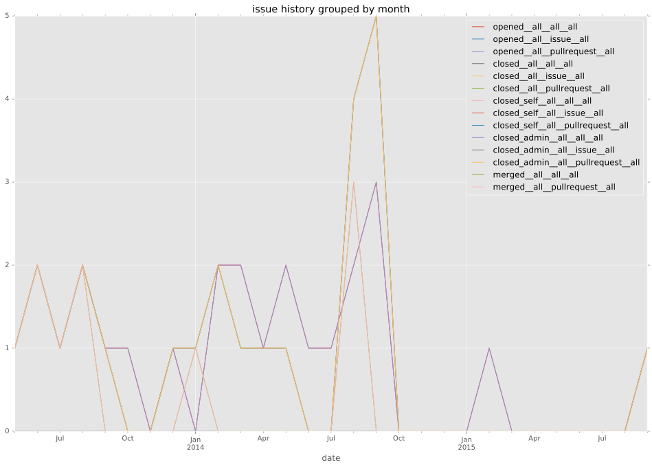
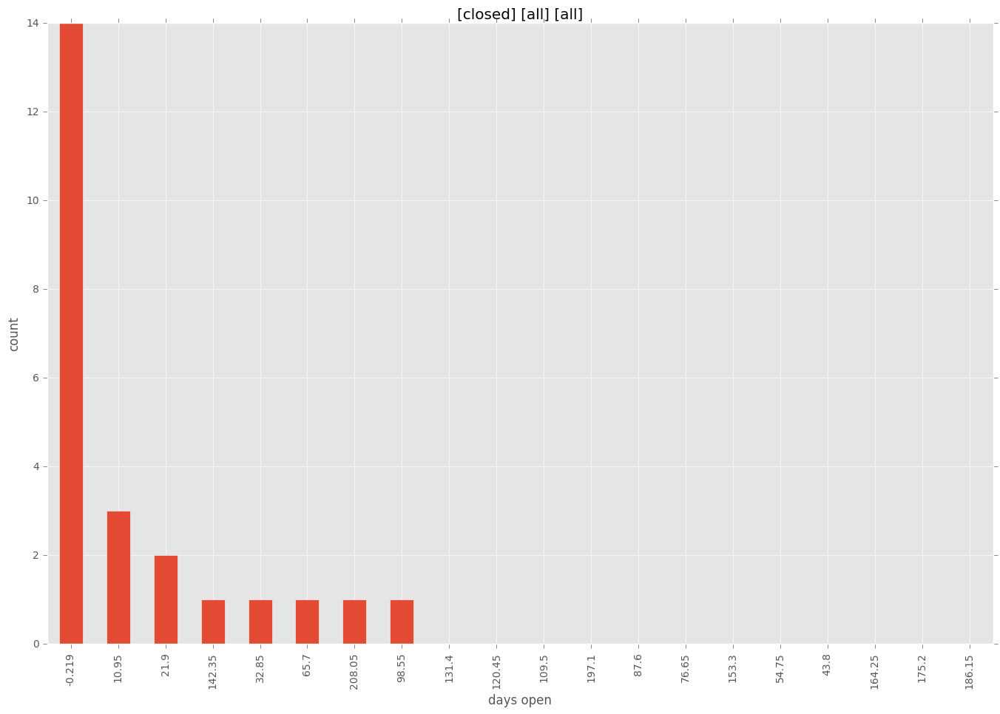
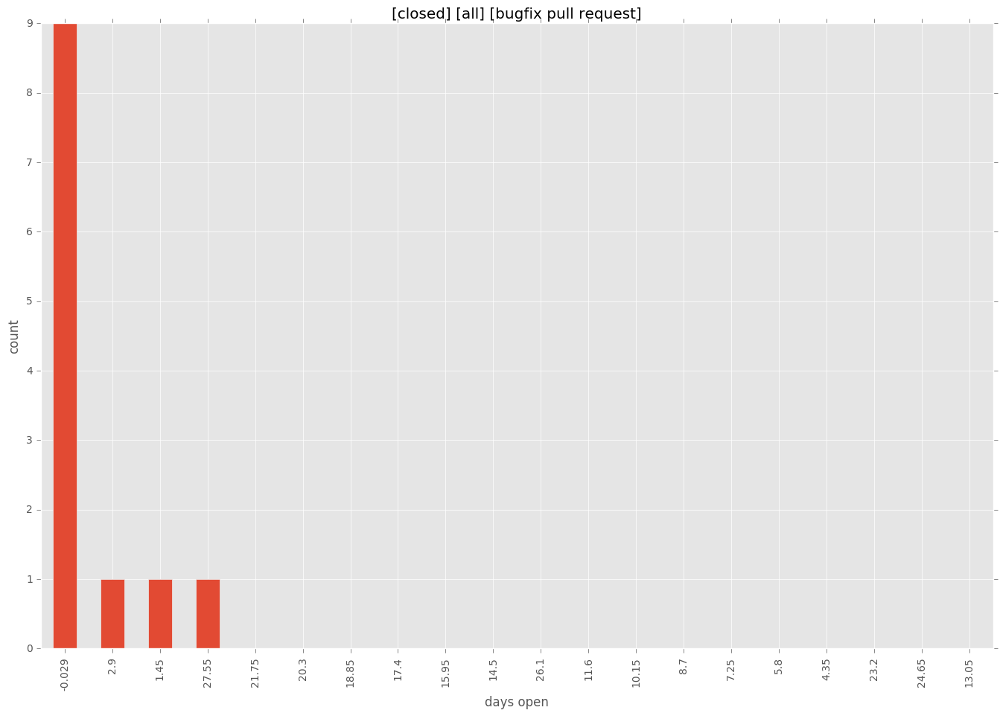
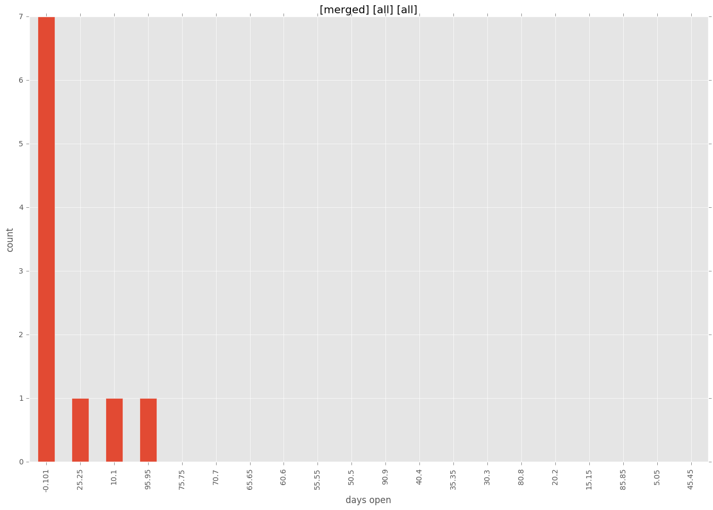
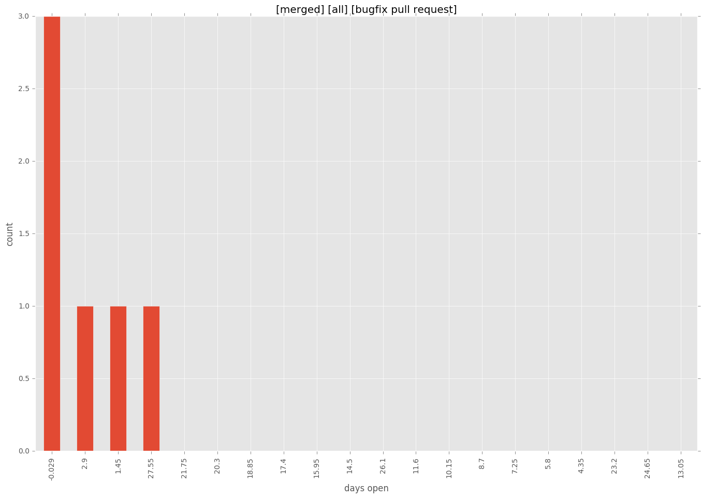
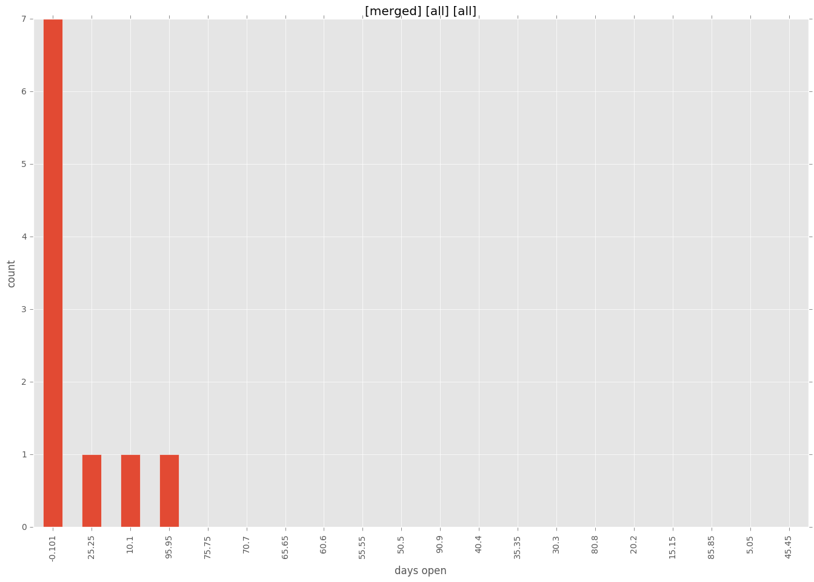
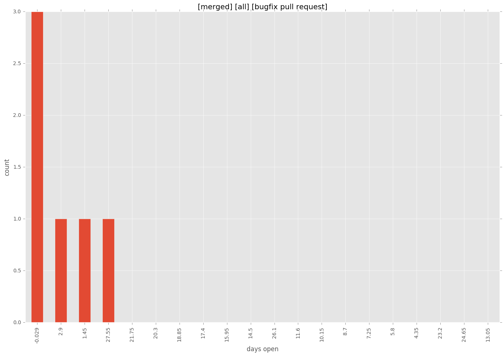

total issue counts
feature pull request: 12
bugfix pull request: 12
pullrequest: 25
docs pull request: 1
issue history

days open by issue type
feature pull request
count: 14
std: 64.8115187836
min: 0
max: 219
median: 11.5
mean: 40.9285714286
bugfix pull request
count: 18
std: 9.15230604178
min: 0
max: 29
median: 1.0
mean: 4.0
all
count: 34
std: 48.9504187292
min: 0
max: 219
median: 3.0
mean: 24.9117647059
pullrequest
count: 0
std: nan
min: nan
max: nan
median: nan
mean: nan
docs pull request
count: 2
std: 0.0
min: 101
max: 101
median: 101.0
mean: 101.0
closures grouped by total days open




 


